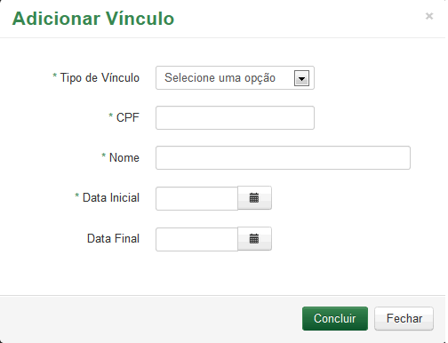
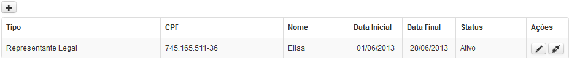

Alterar Pessoa Jurídica
Vínculo
Para cadastrar Vínculo, acione o botão  será exibido o formulário abaixo sendo necessário o preenchimento dos campos solicitados, observando que os campos com asterísco (*) são de preenchimento obrigatório.
será exibido o formulário abaixo sendo necessário o preenchimento dos campos solicitados, observando que os campos com asterísco (*) são de preenchimento obrigatório.

Para Salvar os dados, acione a opção  ;
;
Para voltar a tela anterior e não registrar os dados informados, acione a opção  .
.
As informações serão exibidas conforme figura abaixo:

Para alterar vínculo da Pessoa Jurídica, acione na coluna "Ações" a opção  ;
;
Para inativar o registro dos dados de Pessoa Jurídica, acione na coluna "Ações" a opção .
Após informar os dados clique no botão desejado:
Para seguir para próxima tela, acione a opção  ;
;
Para voltar a tela anterior, acione a opção  ;
;
Para concluir o cadastro, acione a opção  e confirme os dados informados;
e confirme os dados informados;
Para não registrar os dados informados, acione a opção o sistema retorna para a tela "Pesquisar Pessoa".
o sistema retorna para a tela "Pesquisar Pessoa".

Created with the Personal Edition of HelpNDoc: Full featured EPub generator